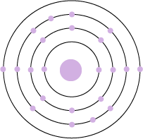
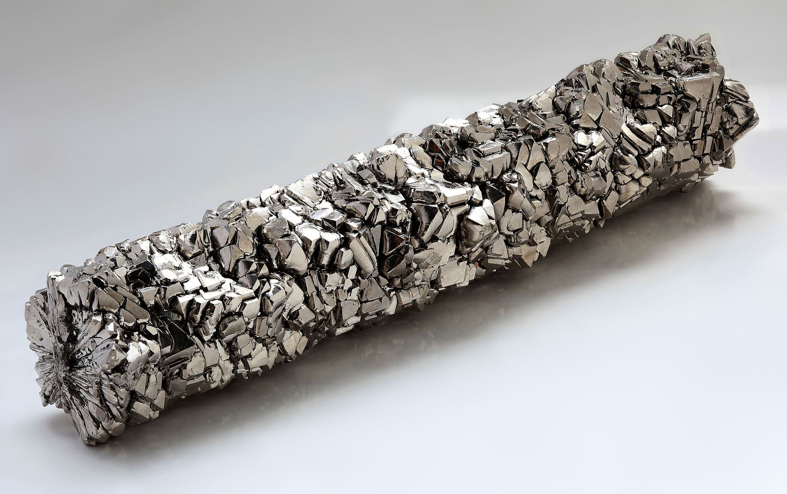

Name: Titanium
Formula: Ti
Atomic Number: 22
Group: 4
Block: d
Relative Atomic Mass: 47.867
Discovery Date: 1791
Appearance: A hard, shiny and strong metal
Uses: Jewellery, Alloys used in aircraft, spacecraft. surgical applications, golf clubs, laptops, submarines.
Atomic Structure: 2,8,10,2
 